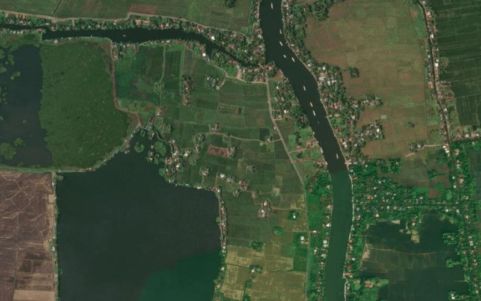
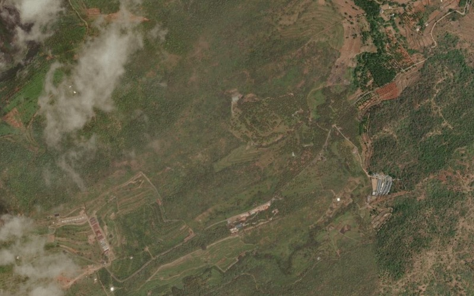
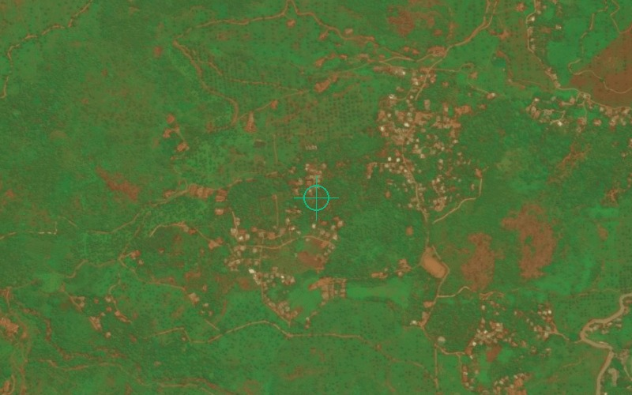

Jal Taranga
WATERSHED TELEMETRY ACTIVEWatershed Intelligence & SRISHTI-DRISHTI Geospatial Engine • 44 Basins • 14 Districts Synced
Rainfall (24h)
452.8
mm
+12% vs baseline
Water Level (Avg)
68.4
m
Normal Discharge
Flood Risk Zones
12
Active
2 Basins Under Advisory
Slope Stability
8
Ghats
Wayanad & Idukki Watch
India – Live Geospatial View
Watershed NetworkNational River Basins • Real-Time Streamflow & Inundation Telemetry
Rainfall (mm)
> 200
100 - 200
50 - 100
20 - 50
5 - 20
1 - 5
0
0 25 50 100 km
Interactive preview • 44 Basins loaded
Rainfall Trend (National)
IMD AWS Synchronized Precipitation
Rainfall (mm)
Water Level (m)
District Catchment Matrix
Catchment Inflow & Reservoir Telemetry • Click row to inspect| District | Rainfall (24h) | Water Level | Risk Level | Status |
|---|
SRISHTI-DRISHTI Geospatial Insights
ISRO Bhuvan 30m Thematic Multi-Spectral Classification & Verified Field Proofs

SRISHTI 30m LULC 97.8% AccuracyLand Use / Land Cover (30m)
115 Polygons • Forest & Cropland
Click to View Layer

SRISHTI DRAINAGE Strahler 1–5Stream Network Hierarchy
474 Reaches • 97.6% Fluvial Snap
Click to View Layer

DRISHTI FIELD PROOFS PMKSY-WDCVerified Geotagged Assets
Check Dams, Ponds & Field Photos
Click to View Layer
Recent Alerts
3Heavy Rainfall Warning
ORANGE ALERTIdukki District • High Inundation Risk
2 hours ago • Catchment TelemetryRiver Level Rising
YELLOW WATCHPeriyar River • Malankara Dam Outflow
4 hours ago • Fluvial TelemetryFlood Risk Increased
HYDRO WATCHKuttanad Delta (Alappuzha) • High Water Spread
6 hours ago • Basin HydrologyLandslide Risk Alert
SLOPE ADVISORYWayanad (Chooralmala Reach) • USLE Threshold
8 hours ago • USLE Slope SensorQuick Actions
System Status
SRISHTI Satellite
30m GSD Active
Drainage Network
474 Reaches
DRISHTI Assets
6 Certified
USLE Model
97.8% Valid